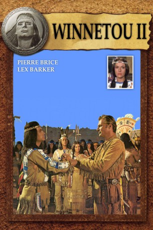

IMDB-Wertung: 6.6 / 10
IMDB-Wertung: 6.6 / 10  Metascore:
Metascore: 
Forester, a ruthless oil baron, wants to create a war between the native American tribes and the white men. Old Shatterhand, Winnetou and their sidekick Castlepool try to prevent this.
Alternativ: Winnetou: The Red Gentleman (Englischer Titel)
 IMDB-Wertung: 6.6 / 10 Metascore:
Forester, a ruthless oil baron, wants to create a war between the native American tribes and the white men. Old Shatterhand, Winnetou and their sidekick Castlepool try to prevent this.
Jahr: 1964
Dauer: 94 Minuten
FSK: 6
Land: West-Deutschland Studio: Constantin FilmTonspuren:
Untertitel: Deutsch,
Auflösung: 1080p (1920x800) Größe: 10035 MB
Regisseur: Harald Reinl
Drehbuch: Karl May, Harald G. Petersson
Soundtrack: Martin Böttcher
Darsteller:
 Lex Barker als Old Shatterhand
Lex Barker als Old Shatterhand Karin Dor als Ribanna
Karin Dor als Ribanna Klaus Kinski als David 'Luke' Lucas
Klaus Kinski als David 'Luke' Lucas Terence Hill als Lt. Robert Merril
Terence Hill als Lt. Robert MerrilDatei: X:\Person\Karl May\Karl May 05 - Winnetou II (1964, FSK6, 1920x800).mkv seit 20.02.2015
Festplatte: HD Collection-7+mehr(A-Z)+Person
 Es gibt insgesamt 20 Filme in der Gruppe 'Person\Karl May'
Es gibt insgesamt 20 Filme in der Gruppe 'Person\Karl May'